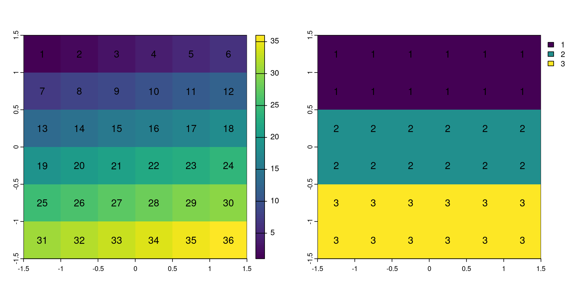

Operaciones espaciales con datos rasters
Contenidos
- Subconjunto espaciales con datos raster
- Algebra raster
- Operaciones locales
- Operaciones globales
- Union de rasters (merge)
1. Subconjunto espacial raster
Subconjunto espacial
Subconjunto espacial
Extrae la posición de la celda con cellFromXY y luego con indexación extrae el valor de esa celda con elev[id]
Extrae el valor que se encuentra en las coordenadas indicadas con la función extract
Subconjunto espacial
También se puede extraer utilizando otro raster, como rater de indexación.
Subconjunto espacial
También se puede extraer utilizando otro raster, como rater de indexación.
Subconjunto espacial
Extraer desde el objeto elev los valores que se encuentran en la extensión del objeto clip
elev
1 18
2 24class : SpatRaster
dimensions : 2, 1, 1 (nrow, ncol, nlyr)
resolution : 0.5, 0.5 (x, y)
extent : 1, 1.5, -0.5, 0.5 (xmin, xmax, ymin, ymax)
coord. ref. : lon/lat WGS 84 (EPSG:4326)
source(s) : memory
varname : elev
name : elev
min value : 18
max value : 24 Subconjunto espacial
La función crop sirve para realizar elev[clip,drop = FALSE]
Subconjunto espacial
Con indexación
Subconjunto espacial
Utilizando un raster con valores lógicos para ser utilizado como mascara
Subconjunto espacial
Utilizando un raster con valores NA para ser utilizado como mascara con la función mask
Subconjunto espacial
Utilizando un raster con valores NA para ser utilizado como mascara.
Se puede utilizar la función mask

Subconjunto espacial
Se pueden crear mascaras con operaciones lógicas.
2. Algebra raster
2. Algebra raster
Algunas consideraciones
- Si usas multiples raster, estos deben tener el mismo punto origen1 y la misma resolución
- Generalmenet tienen la misma extensión, pero si no, devuelve la operación dentro de la intersección de los dos
- El reciclado de raster en operaciones algebraicas funciona de las misma forma que en el caso de los
atomic vectors
2. Algebra raster
Muchas de las operaciones genéricas han sido implementadas
- Operaciones:
+, -, *, /, - Operadores lógicos:
>, >=, <, ==, ! - Funciones como:
abs, round, ceiling, floor, trunc, sqrt, log, log10, exp, cos, sin, atan, tan, max, min, range, prod, sum, any, all
3. Operaciones locales

3. Operaciones locales
Reclasificación
Agrupamos los valores por un rango que define una clase y se le asigna un valor
3. Operaciones locales
Reclasificación
3. Operaciones locales
Funciones de resumen: min, max, mean, prod, sum, Median, cv, range, any, all, siempre devuelven un SpatRaster
3. Operaciones locales
Funciones de resumen: min, max, mean, prod, sum, Median, cv, range, any, all, siempre devuelven un SpatRaster
4. Operaciones globales
Usar la función global para obtener un valor resumen de todo el raster. En general operaciones de estadística descriptiva.
4. Operaciones globales
Cuando se aplica sobre un raster multicapa, devuleve el resultado de la función sobre cada capa del raster.
5. Unión de rasters (merge)
Cuando tenemos dos o más raster de una misma área geográfica y queremos unirlos.
5. Unión de rasters (merge)
Cuando tenemos dos o más raster de una misma área geográfica y queremos unirlos.
5. Unión de rasters (merge)
Para unirlos utilizamos la función merge.
Los raster deben tener el mismo origen y resolución.
Los valores del primer raster se mantienen por defecto.
5. Unión de rasters (merge)
- También podemos utilizar la función
mosaic. mosaicpermite definir una función para resolver en la zona de intersección, por defecto utiliza el promedio, pero se puede cambiar la función.mosaices más lento quemerge,
5. Unión de rasters (merge)